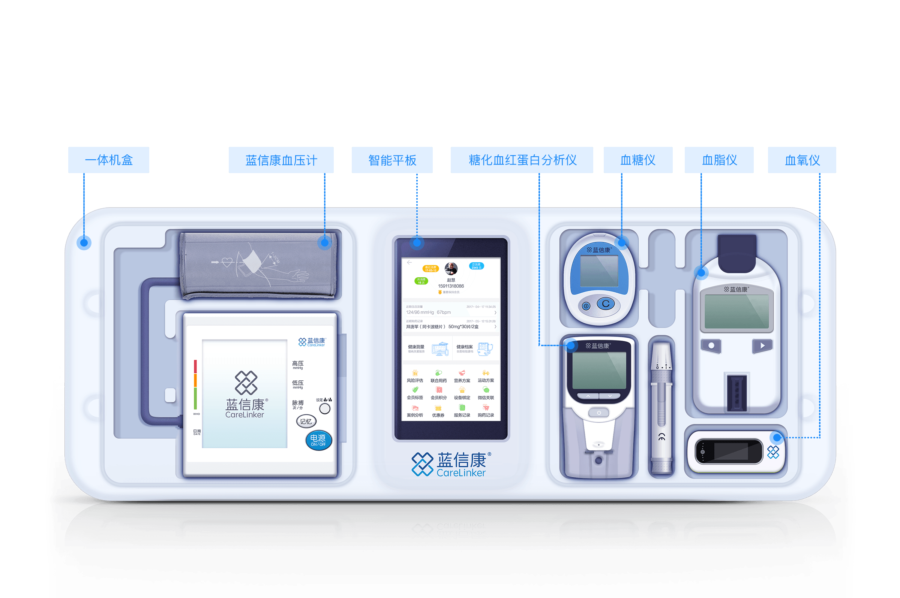

慢病会员服务体系五大功能模块
检测套装
药学服务
宣教干预
会员沟通
家庭关爱
智能的检测套装
涵盖三高及常见慢病项目检测，设备均内置智能传输模块，数据自动存储至云端。

用数据说话丨蓝信康慢病管理项目
以药师主导的高血压、糖尿病管理在社区医疗服务中的效果（回顾性分析）
血压数据来源
时间
2015.01.01-2016.06.30
地点
48个城市78家连锁3000家门店
入组样本
11778人 （基线为高血压）
血糖数据来源
时间
2015.06.06-2016.11.04
地点
94个城市165个连锁1146家门店
入组样本
3653人 （基线为血糖偏高）
收缩压首末对比下降
11.4 mmHg
舒张压首末对比下降
6.6 mmHg
末次检测为正常值的人群占比
42.8%
血压
29.1%
空腹血糖
31.0%
随机血糖
空腹血糖首末对比下降
0.8 mmol/L
随机血糖首末对比下降
1.5 mmol/L
用数据说话丨蓝信康药学服务产品
以药师主导的高血压、糖尿病管理在社区医疗服务中的效果（回顾性分析）
未使用蓝信康产品人群
| 平均用药依从
31.9%
| 收缩压前后比较下降
3.4 mmHg
结论：会员的用药依从性越高，血压管理效果越好，
两者之间的相关系数为r=0.692 （正强相关） 。
两者之间的相关系数为r=0.692 （正强相关） 。
到店检测并使用药学服务人群
| 平均用药依从
49.5%
| 收缩压前后比较下降
11.7 mmHg
结论：会员的用药依从性越高，血压管理效果越好，
两者之间的相关系数为r=0.692 （正强相关） 。
两者之间的相关系数为r=0.692 （正强相关） 。
在家检测并使用药学服务和电话回访人群
| 平均用药依从
61.2%
| 收缩压前后比较下降
15.5 mmHg
结论：会员的用药依从性越高，血压管理效果越好，
两者之间的相关系数为r=0.692 （正强相关） 。
两者之间的相关系数为r=0.692 （正强相关） 。